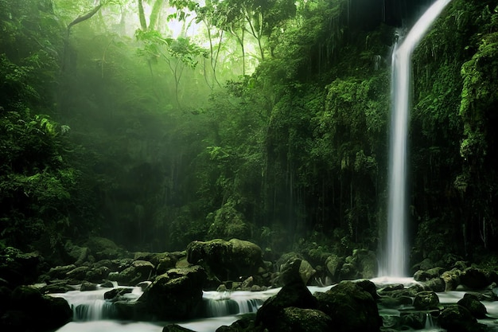

Decides que las trampas son demasiado peligrosas. Tu cuidadora te enseñó bien - los humanos y sus dispositivos son impredecibles. Es mejor alejarse del río por completo.
Te adentras en el bosque alejándote del agua. El terreno es más difícil aquí, con más arbustos y menos caminos claros, pero te sientes más seguro lejos de la actividad humana.
Después de caminar un rato, encuentras señales de otros animales. Huellas de conejos, madrigueras abandonadas, árboles marcados. Hay vida aquí, solo necesitás aprender a encontrarla.
Tu estómago gruñe. No has comido en horas y tu cuerpo aún está débil. Necesitás decidir tu próximo paso.
Buscar un lugar para establecerte y cazar - necesitás recuperar fuerzas
Seguir explorando hacia las colinas - buscar nuevos territorios